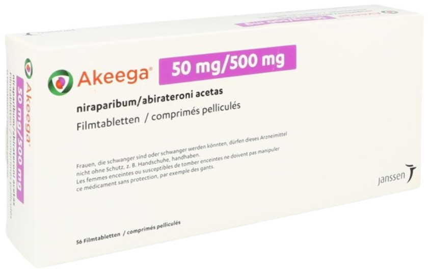
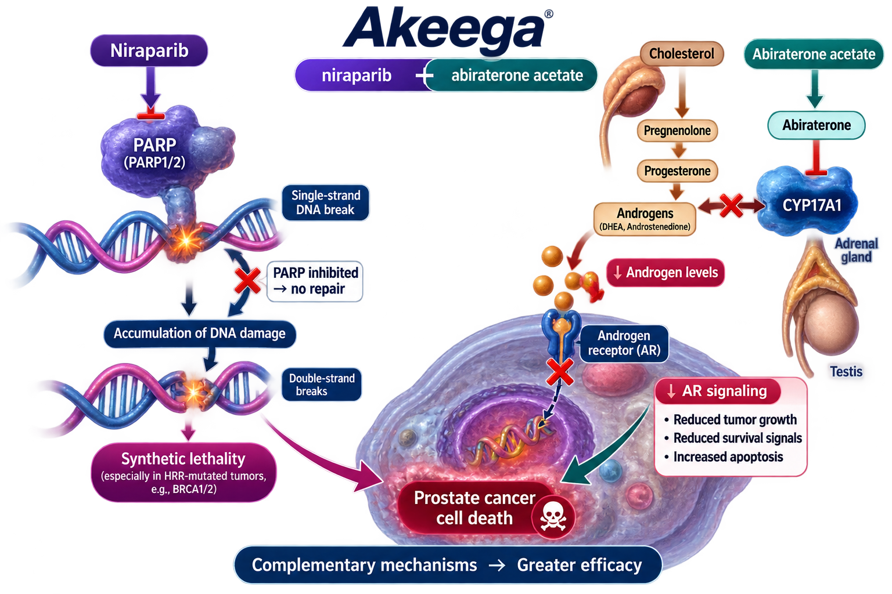

Janssen / Johnson & Johnson
Akeega is an oral fixed-dose combination of niraparib and abiraterone acetate. It combines PARP inhibition with androgen biosynthesis inhibition, targeting both DNA repair vulnerability and androgen receptor signaling in selected patients with advanced prostate cancer.
Akeega
Niraparib / Abiraterone Acetate
PARP + CYP17 Inhibitor
Oral
Janssen / Johnson & Johnson
Akeega combines two complementary mechanisms. Abiraterone inhibits CYP17A1 and suppresses androgen biosynthesis, resulting in decreased androgen receptor stimulation. Niraparib inhibits PARP1 and PARP2, impairing DNA single-strand break repair and producing PARP-DNA complexes. In BRCA-mutated tumors, defective homologous recombination repair further increases sensitivity to PARP inhibition, resulting in accumulation of DNA damage and tumor cell death.

| Trial | Setting | Outcome |
|---|---|---|
| MAGNITUDE | mCRPC with HRR Gene Alterations | Improved Radiographic PFS in BRCA1/2-positive patients |
Recommended regimen: Niraparib 200 mg / Abiraterone acetate 1,000 mg once daily with prednisone or prednisolone.
| Recommended Dose | 200 mg Niraparib / 1,000 mg Abiraterone Once Daily |
|---|---|
| Route | Oral |
| Schedule | Continuous Treatment |
| Administration | Take on an Empty Stomach |